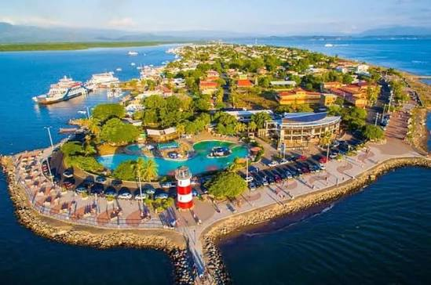

AMBIENTE
FUNDACIÓN MARVIVA
Valeria Soto
Voluntaria
Hay nuevas formas de sumar a tu comunidad. Encuentra una causa y empieza a hacer la diferencia.
Explorar oportunidades
AMBIENTEBanco de Alimentos · Sáb 11 oct · 9:00 a. m.